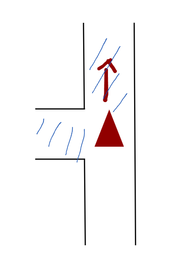
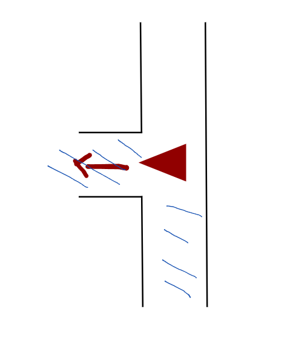
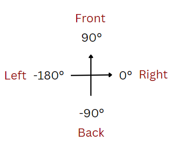
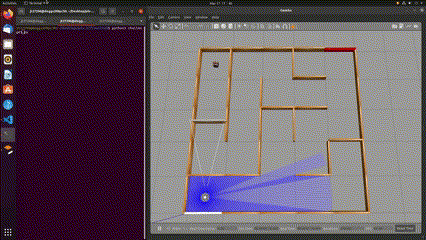
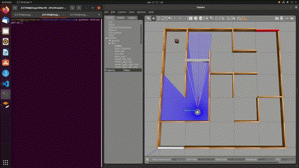
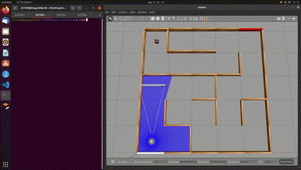
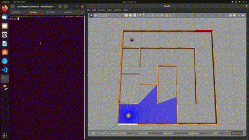
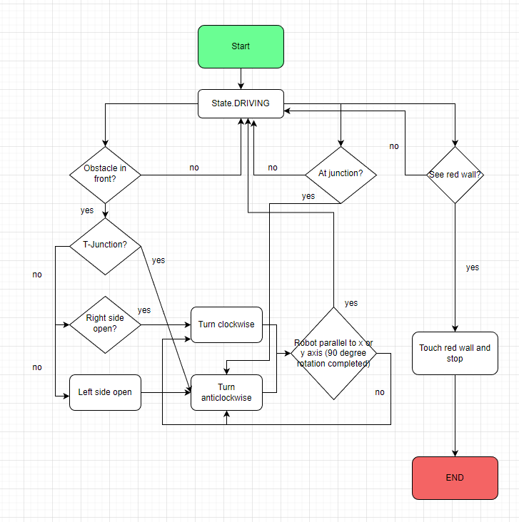

Approaches to Challenges (Part 2)#
Challenge 5#
This time, we are dealing with a much bigger 5 x 5 world. It was at this time that I realised our code has to be generalized so it is able to solve any other different mazes.
Solution#
The solution can be broken down into 2 parts:
The theory (How should the robot move so that it is guaranteed to reach and “see” the red wall at some point in time, even with different mazes?)
The codes
The Theory#
The core concept here is that, in a closed maze, the robot will eventually reach and face the red wall if it always turns left (or right) at the junction. In the case where the left side is not the correct way to solve the maze (it means right side is the correct path), the robot will eventually return to the same road (maybe after a few loops and rounds), and driving in the opposite direction. When it eventually returns to the junction where it had made the wrong choice (left instead of right), the robot will choose to turn “left” relative to it’s driving direction again. But because the driving direction is flipped, the “left” and “right” will be also flipped. Therefore, we can guarantee that at some point in time, the robot will eventually went through every places in the maze and solving it became a guarantee (although not very efficient).
The Codes#
Of course, theory without implementation is merely a theory. In order to put this into code, I have made some changes to the old codes and it will be broken down into several parts that will be listed below:
1. State Machines#
Unlike the previous codes which uses very hard coded state machines, the state machine defined here is much more general. Attached below is the snippet of the code:
class State(Enum):
DRIVING = auto()
BLOCKED = auto()
AT_JUNCTION = auto()
DEBUG = auto()
ROTATING = auto()
CLEARED = auto()
SEEN_RED_WALL = auto()
REACHED_RED_WALL = ()
END = auto()
As you can see from the code snippet above, the robot has more general states such as DRIVING and AT_JUNCTION. You can ignore the state DEBUG because it is only used to return sensor metadata for debugging during development process. The initial state of the robot is defined as State.DRIVING in the beginning by defining it in the class of Tb3 Node.
The snippet below shows the code of the class of Tb3 node:
class Tb3(Node):
def __init__(self):
super().__init__('tb3')
self.cmd_vel_pub = self.create_publisher(
Twist, # message type
'cmd_vel', # topic name
1) # history depth
self.scan_sub = self.create_subscription(
LaserScan,
'scan',
self.scan_callback, # function to run upon message arrival
qos_profile_sensor_data) # allows packet loss
self.odom_sub = self.create_subscription(
Odometry,
'odom',
self.odom_callback, # function to run upon message arrival
1) # allows packet loss
self.ang_vel_percent = 0
self.lin_vel_percent = 0
# DRIVING for normal execution and DEBUG for debugging
# self.state = State.DEBUG
self.state = State.DRIVING
self.rotate_condition = None
self.last_location_x = []
self.last_location_y = []
2. Junction Identification#
Identifying a junction is one of the crucial part for making this algorithm work. Intuitively, this could easily be solved by identifying an open space at the left side of the robot and turn whenever an open space is detected. But this also means that we are abandoning turning to the right (eg: turning right might be the only choice for the robot when it is at the corner with its left side blocked). This could easily be solved by only applying the “always turn left” theory at the junction and implement a general rotating mechanism when a robot is blocked with obstacle in front (this part of the code will be explained later under the topic “4. Decision for the Direction of Rotation When Encountering Obstacles”)
According to the definition above, being at a junction basically means the robot is not blocked (no obstacle in front) and there is an open space at its left side. I can demonstrate it using a diagram below:

The triangle represents the robot and the red arrow represents the direction of driving. The blue stripes represent the area we are scanning to define a junction (front and left). This diagram shows the position and orientation of the robot when it first reaches the junction without rotation.
However, after rotation, the condition that defines what a junction is will still be satisfied. The front and left side of the robot would still be opened and the robot will be still in the AT_JUNCTION state and rotate again instead of driving into the left side of the junction. The diagram below shows the position and orientation of the robot after rotation:

So, by looking at the picture before and after rotation, I decided to also check the back of the robot. For example, before the robot rotates at the junction, the front, the left side and the back of the robot is opened. However, after rotation, the back side of the robot will be blocked by the wall. Therefore, if the back is blocked, I can know that the rotation of the robot at the junction is complete and I can therefore stop its rotation and switch it to the DRIVING state again so that it moves forward.
Below is the snippet of the code that identifies the junction:
if msg.ranges[0] > 1.2 and msg.ranges[90] > 1.2 and self.state == State.DRIVING and msg.ranges[180] > 1.2 and self.state != State.END and self.rotate_condition != 1:
self.state = State.AT_JUNCTION
and below is the code for the state AT_JUNCTION:
if self.state == State.AT_JUNCTION:
self.last_location_x.append(msg.pose.pose.position.x)
self.last_location_y.append(msg.pose.pose.position.y)
if abs(msg.pose.pose.position.x - self.last_location_x[0]) >= 0.15 or abs(msg.pose.pose.position.y - self.last_location_y[0]) >= 0.15:
self.rotate(15)
self.last_location_x = []
self.last_location_y = []
self.state = State.ROTATING
You will probably wonder why I append the x and y coordinates of the robot at the junction into some lists. It is used to delay the rotation of the robot. Without them, the robot will rotate as soon as it detects a junction, drives into it and bang into the wall because it turns too early. To solve this, I decided to store the x and y coordinates of the robot when it first detects the junction and by comparing its actual coordinates with those x and y coordinates recorded, I can make the robot turns only after travelling a certain distance along the x or y axis.
A list is used to store the value of the coordinates instead of using a single normal variable because this block of code will always be executed as this is written in the odom_callback() function. Assigning a value to the x and y coordinates is meaningless because the value will be reset every time the odom_callback() function is called. By storing it into a list, I can just grab the first element of the list for the data, because new values will only be appended they will not overwrite the old value. After the robot started rotating, the lists will be reset and the state will be switched to ROTATING.
So…what happens during the ROTATING state?
3. Determining when to stop rotating#
Reusing the diagram from challenge 3, we can see the value of “k” with the corresponding orientation returned by the odom_callback() function:

If the value of the absolute value (removing the negative sign) of k after rounding up is equal to 0, 90 and 180, we can conclude that it is almost parallel with the x and y axis. This also means that the robot has finished his rotation.
From the code snippet below, we can see that the robot will stop rotating after the absolute value of k is equal to 0, 90 or 180 after rounding up, and the state will switch to DRIVING.
if self.state == State.ROTATING:
if round(abs(k)) == 0 or round(abs(k)) == 90 or round(abs(k)) == 180:
self.rotate(0)
self.state = State.DRIVING
4. Decision for the Direction of Rotation When Encountering Obstacles#
When the robot is driving forward in the DRIVING state, it will constantly use the LaserScan data returned by the scan_callback() function to check if there is anything too near to the front of it. If the distance between the obstacle and the front part of the robot is smaller than 0.6, it will switch its state to BLOCKED.
Below is the code snippet for the above mentioned implementation:
if msg.ranges[0] < 0.6 and self.state != State.SEEN_RED_WALL and
self.state != State.REACHED_RED_WALL and self.state != State.END:
self.state = State.BLOCKED
When it is blocked, the robot will have 3 choices to turn depending on the scenario.
Scenario 1:
The robot is facing a T-junction. In this situation, it should always turn left according to my “always turn left” approach. Therefore, it should rotate anticlockwise.
Scenario 2:
The distance of the wall to the right side of the robot is bigger than that of left side. Which means that the right side is an open space, so the robot should turn clockwise and drive into the open space.
Scenario 3:
The complete opposite of situation 2. In the case where the left side is an open space, the robot should turn anticlockwise and drive into the open space.
The code for scenarios 1, 2 and 3 are all condensed in the code snippet below:
def decide_rotate_direction(self, msg):
print("deciding")
if msg.ranges [-90] > 1.1 and msg.ranges[90] > 1.1:
self.rotate_condition = 1
self.rotate(15)
elif msg.ranges[-90] > msg.ranges[90]:
self.rotate(-15)
self.rotate_condition = 2
else:
self.rotate(15)
self.rotate_condition = 3
self.state = State.ROTATING
The scenarios 1, 2 and 3 corresponds to the number of self.rotate_condition in the code above.
Touch the red wall and stop#
1. First implementation
At first, I just make the robot move very fast towards the red wall and slow down when it reaches a certain distance.
Below is the code snippet for the above mentioned implementation:
def touch_wall_and_stop(self, msg, slow_distance, next_state = None):
if msg.ranges[0] > slow_distance:
self.go()
else:
self.go(1)
if msg.ranges[0] <= 0.12:
print("Red wall touched")
self.stop()
self.state = next_state
Most of the time this implementation works fine, but it has 2 major drawbacks:
Because the Laser Distance Sensor is too noisy, sometimes the robot will not slow down and it will bang into the wall with full speed and drives out of the map. In order to fix this, I have to put the slow_distance to a larger value (robot will begin to slow down at a further distance) and this will largely affect the maze solving time
Because the robot will drive very slowly (1% of its max linear velocity), it is not very competitive in terms of maze solving time
2. Second implementation (The final decision)
Instead of slowing down, I just make the robot bang into the wall at full speed and stop it as long as the laser distance sensor reads infinity.
Below is the code for the above mentioned implementation:
def touch_wall_and_stop(self, msg, slow_distance, next_state = None):
self.go()
if isinf(msg.ranges[0]) or isinf(msg.ranges[-90]):
# print("inf registered")
self.stop()
self.state = next_state
Results:#
With those codes implemented, we can generalize the maze solving capabalities in a surprisingly simple way. Below are a few of GIFs to demonstrate the code in action:
Showcases:
Default 5 x 5 world, location 1:

Default 5 x 5 world, location 2:

Competition, world_5_5_a:

Competition, world_5_5_b:

Competition, world_5_5_c:

Visual diagram to show how the code works:#
